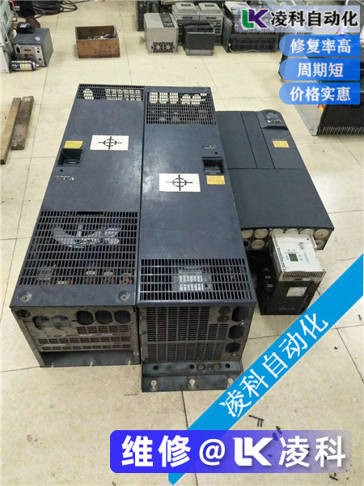
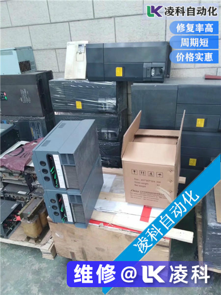
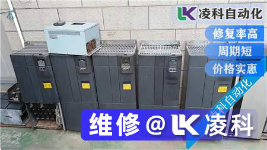

西门子变频器维修范围包括：6SE70系列，MM440系列，MM430系列，MM420系列，MM410系列变转矩 湖北安顺佳数控科技有限公司 6SE70系列矢量控制变频器为IGBT组件，全数字技术电压源逆变器，功率范围2.2kW至5000kW
MM440是新一代多功能标准变频器，功率范围从0.12 kW到250 kW。
MM430是新一代标准变频器的风扇和泵安顺佳负载专家，功率范围为7.5kW至250kW。
MM420是新一代模块化多功能标准变频器，功率范围从0.12kW到11kW。
MM410是新一代紧凑型标准变频器，功率范围从0.12kW到0.75kW
安顺佳数控是国内大型自动维护企业，主要维修：变频器，伺服驱动器，数控系统，触摸屏，直流调速器，电源模块。 PLC。软启动器，仪表，电路板等，（无限品牌任何品牌都可以修复）。
安顺佳数控有8名维修工程师，公司有湖北安顺佳数控科技有限公司，售后部门，销售部门，维修部门，自动化生产部门，财务部门，仓库管理等部门，仓库配件有1000多平方米，精密测试仪器，以及众多品牌维护测试方案。
安顺佳企业使命：帮助客户省钱是为了帮助客户赚钱。
企业理念：速度快，维修率高，收费合理。 西门子敢于比较的企业，恐怕你不会比较。
同质量修复，修复速度相同。
同样的维修比服务，同样的修理比实力。
同样的维修比技术，同样的维修更诚实。
相信实力，质量，技术，诚信，服务，速度。

安顺佳变频器维修故障分析：
操作西门子6SE7016-1TA61-Z变频器控制面板PMU LCD显示字母“E”报警电路板维修。检查背板，用数字万用表测量外部DC24V电压是否正常，检测块N3参考电压是否正常，集成块N2 20脚的输出电压是否为0.1V，这显然是低的，正常值应该是为15V，检查集成块N2的1脚11.3V，8脚是0.20V，11脚电源输入是27.5V，正常。经过分析，判断1引脚，8引脚和20引脚的电压值不正常。测量块N3的引脚1的电压为0.31V，引脚2的电压为1.8V，电压值也低。用热风枪拆下N3集成块MC340，测量引脚2和引脚3之间的电阻为84Ω。更换新的N3集成块MC340后，测量每个引脚的电压。 1针是2.1V，2引脚是5.1V，这是正常的。 N2集成块的每个引脚的电压也恢复正常。集成块N3的输出电压异常，导致N2集成块的每个引脚的电压也移位。恢复变频器接线，输入参数，启动变频器正常运行。
当西门子变频器的液晶显示屏上出现“E”报警时，变频器无法工作。按P键并重新启动和发送电源无效。查看操作手册，没有相关介绍。检查外部DC24V电源时，会发现电压。低，解决方案后，逆变器正常工作。但是，“E”警报通常是由CUVC板损坏引起的。更换新的CUVC板是正常的。 “E”警报由于背板和CUVC通信板故障而导致以下情况：
（1）故障现象：操作控制面板PMU LCD显示“E”报警
检查处理（参见图1，图2）：更换新的CUVC板以接通电源，LCD仍然显示“E”警报，表明故障原因不在CUVC板中，而是在背板中
变频器维修
（2）故障现象：操作控制面板PMU LCD显示“E”报警
检查处理（参见图1，图2）：使用数字万用表测量N2和N3集成块的每块电路板的电压。 N3的1引脚N2的引脚8的电压为低。 V28晶体管的基极偏置电阻为4.7kΩ。该值为150kΩ。更换新的贴片电阻并测量N2和N3每英尺的电压。由于V28基极偏置电阻的值可变，V28三极管被切断，导致N2和N3集成块无法正常工作。
（3）故障现象：操作控制面板PMU的LCD面板显示“E”报警
检查和处理：带有“E”报警的变频器，拆除原装CUVC板上的CBT通讯板，安装在新的CUVC板上，变频器配备CUVC板，启动后。液晶显示屏仍然显示“E”警报。拆下CUVC板并检查CBT通信板上的芯片电阻是否烧坏。更换新的CBT通信板后，逆变器开始正常工作。
（4）故障现象：操作控制面板PMU的LCD面板显示“E”报警
检查处理（见图1，图2，图4）：检查背板电源块N2（L4974A）的引脚1的上电电压是否为11.32V，正常值为26.7V;第20引脚的输出电压为0.117V，正常值为15.31V;参考电压块N3（MC340）的引脚电压为0.315V，正常值为2.1V;第二引脚的电压值在1.5和1.8V之间变化，正常值为5.1V。检查继电器K4。线圈电路与两个二极管V16和V15串联连接。电阻值分别为3.67Ω和5.5Ω。它已被短路。 V28（5C）三极管的基极电阻已从4.7kΩ的正常值变为150kΩ，并已烧毁。更换新电阻和二极管后，它正常工作。
变频器维修
各种逆变器维修，选择安顺佳数控：
安川变频器维修，松下变频器维修，富士变频器维修，LG变频器维修，艾默生变频器维修，西门子变频器维修，施耐德变频器维修，ABB变频器维修，丹佛斯变频器维修，台湾变频器维修，泰安变频器维修，东元变频器维修，LS（松下电器）逆变器维修，博世力士乐逆变器维修，嘉陵逆变器，神源逆变器，正弦逆变器，德莱尔逆变器维修，欧锐逆变器维修，阿尔法逆变器维修，欧姆龙逆变器维修，三岔逆变器维修，微能量逆变器维修西门子变频器维修，ABB变频器维修，施耐德维修，丹佛斯变频器维修，AB变频器维修，安川变频器维修，三菱变频器维修，富士变频器维修，三岔变频器维修，东源变频器维修，东芝变频器维修，松下电工变频器维修，伦茨逆变器维修，日立逆变器逆变器维修，欧姆龙逆变器维修，CT逆变器维修，艾默生变频器维修，LG逆变器维修，艾默生变频器维修，南昱变频器维修，欧陆变频器维修：欧陆650变频器维修。大陆690变频器维修，大陆直流调速器维修590 +大陆直流调速器，台达变频器维修，泰安变频器维修，通用变频器维修，艾德利变频器维修，阿尔法变频器维修，嘉陵变频器维修，森兰变频器维修，安邦新变频器维修，康沃变频器维修，英威腾变频器维修，海力普变频器维修，康普变频器维修，阿尔法变频器维修，依靠变频器维修，神源变频器维修，利德福华变频器维修，格雷特变频器维修，时代变频维修，星河变频器维修，清华同方变频器维修，汇川变频器维修，硕普变频器维修，正弦变频器维修，中大玻力变频器维西门子故障现象：启动时无响应，无输出电压输出。
维护过程：拆卸逆变器内部后，发现一个部件在接入部分爆炸，附近的部件也是黑色。其中一台逆变器的整个部件被炸毁，只留下两英尺。
面对这种情况，我们开始更换油炸组件，但由于我们不知道组件的型号和规格，在网上查看了大量数据后，我们初诊断出组件是压敏电阻。因此，我们从硬件仓库购买了两个压敏电阻。三天后，the varistor被买回来换成两个损坏的逆变器。由于态度不是很自信，我们决定启动测试机器。就在我们插上电源的那一刻，一声巨响，刚改变的压敏电阻爆炸了。
重量插入并测试新的逆变器。逆变器整流模块是否有问题，导致压敏电阻突然达到高压并烧毁压敏电阻？我们插入了一个整流器模块，整流器模块没有出现损坏迹象。
压敏电阻不是燃烧的，而是电容器，因为电容器的外观类似于压敏电阻的外观。
当我们无法分辨烧焦组件是哪个组件时，我们决定拆除未烧坏的逆变器并取出好的组件并在西湖电子城中购买。在电子城之后，我们发现我们不能购买我们需要的组件，模型是：S14 K275（我们无法确定此组件此时是电容器还是电阻器），因为此组件是SIEMENS原件，在中国很少见到这种成分。面对这种情况，我们再次大胆地尝试诊断烧焦的元件*可能仍然是压敏电阻！因为我们不能购买相同的元件，我们决定购买压敏电阻并再试一次，但我应该买什么类型和尺寸的压敏电阻？在石龙 电子的现场，在查阅压敏电阻的相关手册后，我们决定购买两个14D431K的压敏电阻型号，然后再试一次。
因为手册指出14D431K压敏电阻的耐压为AC275V，而我们在烧制元件模型中有K275，我们觉得它可能与国外和国内不同。购买新的压敏电阻后，我们将其焊接到其中一个逆变器板上并为其供电。逆变器显示屏显示电源开启提示，并测量输出。一切正常。你能拖动马达吗？怀疑的是，我们将变频器放在传送带上，接通电源，重置参数，传送带正常运行，一切正常。经过两周的反复练习和实验，我终于修复了两台坏逆变器。
故障原因：当逆变器内部电路烧坏时，输入部分电源模块的电源得到修复。因此，我们一直被诊断为：输入电压过大，超过压敏电阻的耐压，从而引起逆变器的供电部分。损伤。
变频器维修

西门子变频器维修当我们无法判断哪个部件烧坏时，我们决定拆下未烧坏的变频器并取出好的部件并在西湖电子城中购买。在电子城之后，我们发现我们不能购买我们需要的组件，模型是：S14 K275（我们无法确定此组件此时是电容器还是电阻器），因为此组件是SIEMENS原件，在中国很少见到这种成分。面对这种情况，我们大胆尝试诊断烧焦的成分再*可能仍然是压敏电阻！因为我们不能购买相同的元件，我们决定购买压敏电阻并再试一次，但我应该买什么类型和尺寸的压敏电阻？在石龙 电子的现场，在查阅压敏电阻的相关手册后，我们决定购买两个14D431K的压敏电阻型号，然后再试一次。
因为手册指出14D431K压敏电阻的耐压为AC275V，而我们在烧制元件模型中有K275，我们觉得它可能与国外和国内不同。购买新的压敏电阻后，我们将其焊接到其中一个逆变器板上并为其供电。逆变器显示屏显示电源开启提示，并测量输出。一切正常。你能拖动马达吗？怀疑的是，我们将变频器放在传送带上，接通电源，重置参数，传送带正常运行，一切正常。经过两周的反复练习和实验，我终于修复了两台坏逆变器。
故障原因：当逆变器内部电路烧坏时，输入部分电源模块的电源得到修复。因此，我们一直被诊断为：输入电压过大，超过压敏电阻的耐压，从而引起逆变器的供电部分。损伤。